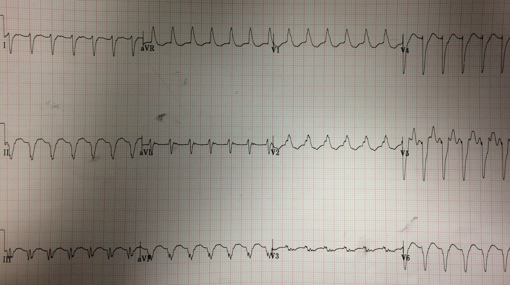
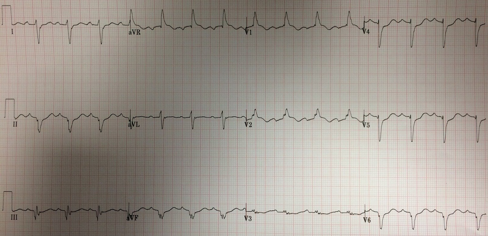
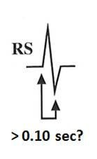

10/01/2017 — Nhịp nhanh QRS rộng và tím tái
Bản dịch tiếng Việt của bài "Wide Complex Tachycardia and Cyanosis" – Dr. Smith’s ECG Blog. Giữ nguyên toàn bộ 4 hình ảnh của bản gốc.
Ca bệnh này do một cựu bác sĩ nội trú của HCMC gửi đến:
Một phụ nữ 20 mấy tuổi, không nói được tiếng Anh, có tiền sử một loại dị tật tim bẩm sinh nào đó, bị ngã quỵ tại nhà; đội cấp cứu ngoài viện (EMS) phát hiện bệnh nhân có nhịp nhanh QRS rộng (WCT) đều, tần số khoảng 200 lần/phút. Họ đã thử chuyển nhịp bằng adenosine nhưng không thành công (liều không chắc chắn, được cho là 12 mg, nhưng đây sẽ là một liều khởi đầu bất thường).
Khi đến khoa chúng tôi, bệnh nhân tím tái và đáp ứng rất kém, có một sẹo mở xương ức đã lành. Không có sẵn hồ sơ bệnh án nào ngay lúc đó.
Huyết áp của bệnh nhân bình thường trong suốt quá trình. Độ bão hòa O2 ở mức 70 mấy và 80 mấy phần trăm khi thở O2 dòng cao, nhưng không có bằng chứng phù phổi. Họ có nhận thấy các ngón tay “dùi trống”.
Một người thân nói được bằng thứ tiếng Anh bập bẹ: “single ventricle” (một thất duy nhất).
Đây là điện tâm đồ 12 chuyển đạo ban đầu:


Đây là nhịp nhanh thất (VT) hay SVT kèm dẫn truyền lệch hướng?
Còn có thể nói gì khác về nó?
Nên làm gì? Diễn giải đầy đủ nằm ở cuối cùng của bài
Bình luận:
Nếu bệnh nhân không ổn định, cứ sốc điện chuyển nhịp. Rối loạn ý thức của bệnh nhân có thể do giảm tưới máu (sốc), dù huyết áp bình thường (huyết áp đo không xâm nhập không đáng tin cậy ở bệnh nhân nặng). Do đó phải xem bệnh nhân là không ổn định, nên hãy dùng điện!
Có người có thể gọi bệnh nhân này là không ổn định vì độ bão hòa oxy thấp, nhưng một bệnh nhân đã biết có một thất duy nhất nhiều khả năng mắc bệnh tim bẩm sinh tím và có độ bão hòa O2 nền rất thấp, ngay cả khi thở O2 dòng cao. Điều này càng đúng nếu không có bằng chứng phù phổi trên X-quang ngực hoặc siêu âm tại giường. Ngón tay dùi trống là bằng chứng ủng hộ thêm.
Do đó, rất có khả năng bệnh nhân bị giảm oxy máu không thể điều chỉnh được do sinh lý shunt.
Nếu bệnh nhân ổn định (còn tỉnh), thì sẽ có vài phút để suy nghĩ:
Thứ nhất, nếu có thể dễ dàng tìm được các điện tâm đồ cũ ở nhịp xoang, thì có thể so sánh hình thái QRS lúc nền với hình thái trong cơn nhịp nhanh này. Nếu giống hệt nhau, thì đây là nhịp trên thất (bao gồm cả nhịp nhanh xoang). Để chẩn đoán nhịp nhanh xoang, có thể dùng chuyển đạo Lewis để làm lộ ra sóng P ẩn. Việc này mất khoảng 30 giây. Đây là hướng dẫn ghi chuyển đạo Lewis. Việc này được thực hiện bằng máy theo dõi (monitor), không phải bằng máy điện tâm đồ 12 chuyển đạo.
Thứ hai, ở phần lớn người trẻ không có bệnh tim cấu trúc, SVT có khả năng cao hơn. Tuy nhiên, bệnh nhân này có bệnh tim cấu trúc, nên VT hoàn toàn không phải là ít có khả năng.
Thứ ba, giả sử thực sự KHÔNG phải nhịp nhanh xoang, thì adenosine liều cao hơn hoặc sốc điện chuyển nhịp đều có hiệu quả tốt. Ngay cả khi là nhịp nhanh xoang, không biện pháp nào trong hai biện pháp này quá nguy hiểm, nhưng chúng sẽ không mang lại lợi ích cho bệnh nhân.
Thứ tư, QRS có cho bằng chứng nào phân biệt SVT với VT không? Có trục “tây bắc” (northwest) (giữa -90 và 180, với một sóng R đơn pha lớn ở aVR). Điều này hàm ý xung động khởi phát ở mỏm tim (tâm thất, nơi VT khởi phát) và lan truyền về phía đáy tim (“đáy” nghĩa là phía trên bên phải). Mặt khác, phần đầu của QRS (khử cực ban đầu) rất nhanh, ngay cả ở sóng R dương đó tại aVR. Hãy nhìn chuyển đạo V5: phần đầu đó gồm đoạn từ khởi đầu sóng R đến đáy sóng S, và nó ngắn hơn 60 ms. Do đó, SVT kèm dẫn truyền lệch hướng hoàn toàn không phải là ít có khả năng.
Do đó, ở một bệnh nhân ổn định: Vì đó là cách dễ nhất, tôi sẽ thử adenosine liều cao hơn.
Ca bệnh tiếp diễn:
“Chúng tôi đặt nội khí quản cho bệnh nhân, sau đó hội chẩn tim mạch và quyết định sốc điện chuyển nhịp với mức 200J hai pha. Lần sốc này thành công.”
“Tôi tìm được hồ sơ, tuy hạn chế nhưng gợi ý dị tật tim bẩm sinh, và độ bão hòa O2 nền của bệnh nhân nằm trong khoảng 70-80%.”
Đây là điện tâm đồ sau sốc điện chuyển nhịp:


Rõ ràng là nhịp xoang, với hình thái QRST giống hệt bản ghi đầu tiên.
Điều này chứng minh nhịp ban đầu đúng là SVT kèm dẫn truyền lệch hướng.
Đường thở, Hô hấp, Tuần hoàn (ABC)
Chúng ta luôn được dạy dùng trình tự này, nhưng chúng ta thường bị nhầm lẫn. Đôi khi vấn đề về đường thở và hô hấp thực ra là vấn đề tuần hoàn (sốc kèm rối loạn ý thức). Tôi sẽ sốc điện chuyển nhịp trước, việc này thường sẽ giải quyết được vấn đề. Nếu không, hãy đặt nội khí quản. Ngoài ra, khi bệnh nhân lơ mơ (sững sờ), việc an thần trước khi sốc điện chuyển nhịp vừa nguy hiểm vừa không cần thiết. Nghiên cứu của chúng tôi tại HCMC cho thấy những bệnh nhân bệnh nặng nguy kịch này không nhớ những sự việc như vậy.
Bài vỡ lòng về nhịp nhanh QRS rộng
Thứ nhất, dùng điện cho bệnh nhân không ổn định.
Thế nào là không ổn định? Sốc nặng, thiếu máu cục bộ cơ tim, hoặc phù phổi.
Nếu ổn định, bạn có thể dành một chút thời gian để suy nghĩ.
Chẩn đoán phân biệt nhịp nhanh QRS rộng
Khi đánh giá nhịp trong nhịp nhanh QRS rộng đều, đây là những đánh giá tôi thực hiện, dù không có phương pháp nào là hoàn hảo tuyệt đối:
—Nhịp xoang kèm dẫn truyền lệch hướng — Dẫn truyền lệch hướng có thể do độc chất (QRS rộng do nhiều loại thuốc có tác dụng chẹn kênh natri và làm kéo dài QRS) hoặc do tăng kali máu.
—SVT kèm dẫn truyền lệch hướng. Đây có thể là 1) AVNRT kèm dẫn truyền bất thường xuống thất, hoặc 2) AVRT (nhịp nhanh vào lại nhĩ thất) ngược chiều, với xung động đi xuống qua một đường phụ và đi lên qua nút AV)
—Nhịp nhanh thất (VT)
Đánh giá xác suất tiền nghiệm:
–Phần lớn các trường hợp nhịp nhanh QRS rộng là VT
–Nếu có tiền sử nhồi máu cơ tim, bệnh cơ tim, phân suất tống máu thấp, thì khả năng VT còn cao hơn nữa
Đánh giá điện tâm đồ:
–Có sóng P đi trước QRS? –Nhịp xoang
–Không đều hoàn toàn? Rung nhĩ
(VT thì đều, trừ VT đa dạng, vốn phải có QRS đa dạng)
–Đều? –khi đó: nhịp nhanh xoang / nhịp nhanh nhĩ / cuồng nhĩ / PSVT / VT)
–Tần số thay đổi từ từ hay luôn giữ nguyên?
Thay đổi từ từ: nhịp xoang hoặc nhịp tự động khác (một số nhịp nhanh nhĩ, nhịp nhanh bộ nối)
Không thay đổi: nhịp vào lại như: cuồng nhĩ, PSVT (bao gồm AVRT) hay VT
QRS rộng, đơn dạng, đều, không có sóng P (hoặc có sóng P ngược dòng)
1. SVT kèm dẫn truyền lệch hướng
(bao gồm AVRT ngược chiều sử dụng một đường phụ)
2. VT (dù nó có thể có sóng P phân ly, hoặc sóng P ngược dòng)
VT hay SVT kèm dẫn truyền lệch hướng
5 thuật toán phân biệt SVT kèm dẫn truyền lệch hướng với VT – theo ý tôi, chỉ có thuật toán của Sasaki là dùng được ở khoa cấp cứu:
1. Brugada (thuật toán Brugada)
2. Vereckei 1 (thuật toán Vereckei thứ nhất)
3. Vereckei 2 (chỉ dùng aVR)
4. Sasaki (xem bên dưới) (Sasaki K. Circulation 2009; 120:S671) có độ nhạy 86% và độ đặc hiệu 97% trên 107 ca nhịp nhanh QRS rộng. Thuật toán này chưa được thẩm định; điều này quan trọng: quy tắc Brugada cho kết quả tốt hơn nhiều trong nghiên cứu ban đầu so với trong các nghiên cứu thẩm định sau đó.
5. Thuật toán mới (Jastrzebski và cs.): phức tạp hơn nhưng chính xác hơn (link toàn văn):
The ventricular tachycardia score: a novel approach to electrocardiographic diagnosis of ventricular tachycardia (Thang điểm nhịp nhanh thất: một cách tiếp cận mới trong chẩn đoán nhịp nhanh thất trên điện tâm đồ). Trong hệ thống tính điểm rất phức tạp này, được xây dựng từ 512 ca VT đã được xác định và 276 ca SVT đã được xác định, độ đặc hiệu với điểm từ 3 trở lên là 98%, nhưng độ nhạy chỉ 66%. Rõ ràng đây không phải là điều có thể làm dễ dàng ở khoa cấp cứu.
Tóm tắt
Dưới đây tôi liệt kê những đặc điểm của các thuật toán mà tôi cho là dùng được.
Xử trí
Nếu bạn không chắc chắn, nhưng khá chắc rằng đó không phải nhịp nhanh xoang
Cho an thần/Sốc điện chuyển nhịp (hoặc Adenosine)
Dùng adenosine nếu bạn nghi ngờ SVT:
—Người lớn tuổi, đã biết chắc là không có bệnh tim cấu trúc
—Người trẻ tuổi, trừ khi đã biết có bệnh tim
—Thời gian QRS dưới 140 ms
—Không có dấu hiệu rõ ràng của VT
QRS đồng hướng, nhát hỗn hợp, phân ly nhĩ thất
—Phần đầu của QRS khử cực nhanh một cách không thể nghi ngờ (ví dụ, LBBB hoặc RBBB bình thường)
–an toàn trong VT
–an toàn trong WPW, nếu nhịp đều
—Không an toàn trong WPW kèm rung nhĩ (không đều, khoảng RR dưới 250 ms, QRS đa dạng)
–chuyển được nhịp nhanh vào lại nhĩ thất, dù là xuôi chiều hay ngược chiều
–các nhịp này phụ thuộc vào nút AV để vào lại
–chuyển được một dạng VT phân nhánh (fascicular VT) (VT đường ra thất phải)
1) Tìm sóng P ẩn trước mỗi QRS. Đừng bỏ sót nhịp xoang. Dùng chuyển đạo Lewis.
2) Thời gian QRS: VT thường (nhưng không phải luôn luôn) có thời gian QRS trên 140 ms. Một ngoại lệ nổi bật là VT phân nhánh. QRS càng rộng thì càng có khả năng là VT.
3) Có hình dạng RBBB hoặc LBBB và phần đầu của dạng BBB đó có hẹp không? Nếu có, rất có khả năng đó là SVT.
4) Nhìn nhanh để tìm nhát hỗn hợp rõ ràng và phân ly nhĩ thất. Nếu thấy, thì đó là VT.
5) Nhìn nhanh để tìm tính đồng hướng (ở các chuyển đạo trước tim, mọi QRS đều cùng một hướng — điều này không giống với tính đồng hướng của đoạn ST trong LBBB). Đồng hướng nghĩa là không có dạng RS.
QRS đồng hướng ở chuyển đạo trước tim có hai dạng:
1) QRS dương ở V1 (dạng RBBB).
Dạng này hầu như luôn là VT hoặc AVRT (ngược chiều, đường phụ ở thành bên)
2) QRS âm ở V1 (dạng LBBB).
Dạng này là VT trong ít nhất 90% trường hợp, nhưng không phải 100%.
6) Cuối cùng, vì dễ áp dụng, tôi thích quy tắc Sasaki
Quy tắc Sasaki
Bước 1: Có sóng R khởi đầu ở aVR không?
Nghĩa là có một sóng R (dương) đơn độc, lớn (không phải sóng r nhỏ) ở aVR hay không. Điều này cho thấy các nhát bóp khởi phát và lan truyền từ mỏm tim lên đáy tim, nên chúng hẳn phải xuất phát từ thất, tức là VT.
–Nếu có, nhịp là VT. Nếu không, sang bước 2.
Ở đây thì không. Xem điện tâm đồ có kẻ đường bên dưới. Dù thoạt nhìn có vẻ có sóng R khởi đầu đơn pha ở aVR, đường kẻ cho thấy thực ra có một khoảng chậm 30 ms.
Bước 2: Ở bất kỳ chuyển đạo trước tim nào, khoảng từ khởi đầu sóng R đến đáy sóng S có ≥ 100 msec (0,10 giây) không? Xem hình bên dưới.
–Nếu có, nhịp là VT. Nếu không, sang bước 3. Ở đây thì không.


Bước 3: Có sóng r hoặc q khởi đầu ≥ 40 ms ở bất kỳ chuyển đạo nào không?
Nếu có, điều này nghĩa là trong 40 mili giây đầu tiên trở lên, dẫn truyền diễn ra chậm như khi đi qua cơ tim (thất trái, VT), chứ không qua các sợi dẫn truyền như trong SVT)
–Nếu có, đó là VT. Nếu không, đó là SVT. Ở đây là “Không”, do đó là SVT

Do đó, sóng r hoặc q ở đầu QRS cũng chỉ kéo dài 30 ms.
Quy tắc Sasaki này khá chính xác trong nghiên cứu xây dựng, nhưng chưa bao giờ được thẩm định, ít nhất là theo hiểu biết của tôi.
Diễn giải của tôi là các sóng lệch ban đầu có thời gian rất ngắn, do đó ít có khả năng là VT. Nhưng tôi chỉ nhận ra điều đó sau khi đã biết kết cục (quá thiên lệch!)
Vì vậy, tôi đã cho Ken Grauer (một trong những bậc thầy, đây là trang của ông ấy) xem điện tâm đồ này mà không cung cấp thông tin gì (đọc mù):
http://ecg-interpretation.blogspot.com/ (trang ECG Interpretation của Ken Grauer)
“Hình dạng kỳ dị, điều này tất nhiên khiến người ta nghĩ đến VT —
nhưng:
1) kiểm tra lại các chuyển đạo (tất cả đều dương ở aVR); và
2) Rất có thể là
nhịp trên thất kèm một dạng bệnh tim nền nặng nào đó
(bệnh cơ tim; bệnh tim bẩm sinh nếu bệnh nhân trẻ)”
“Vì vậy tôi thực sự muốn
biết bối cảnh lâm sàng….Một số chuyển đạo trông có vẻ có thể là nhịp trên thất (tức là, sóng r khởi đầu rất mảnh, hẹp ở chuyển đạo I và aVL vốn chủ yếu âm — thay vì âm hoàn toàn) — sóng r khởi đầu mảnh ở V4 với sườn xuống rất dốc — và sóng Q ở chuyển đạo III trông có vẻ có thể là bệnh lý, chứ không phải sóng Q của trục âm hoàn toàn như VT sẽ có.”